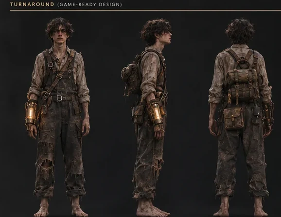
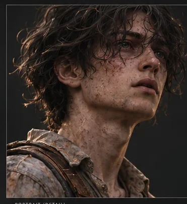
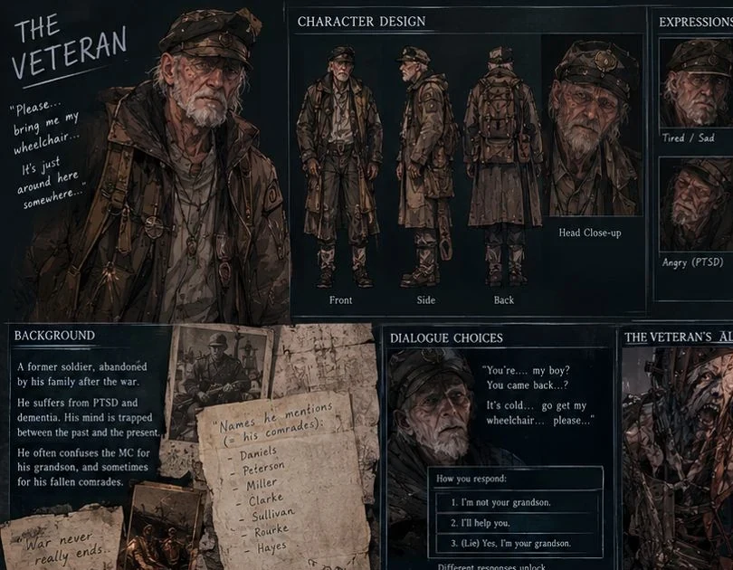

FILE / 002
THE COMPANIONLUNA
A resourceful young woman who joins the journey, helps solve puzzles, and appears determined to reach an escape route.
ROLE / TRAVEL COMPANION● CONFIRMED
Some strangers help. Some remember more than they say. Every encounter carries a story of survival, loss, and fragile hope.
 IDENTITY / NOT ESTABLISHED
IDENTITY / NOT ESTABLISHED18 years old. Dark tangled hair. Exhausted eyes. Battered workwear and bare feet. His journey begins with no clear memory of how he arrived, only a strange certainty that light is something worth keeping close.
Moths gather near him. A lamp and a hand-built electrical apparatus become the unlikely instruments of his survival.
Selected story-driven characters. Some appearances remain intentionally undefined while the game is in development.
A resourceful young woman who joins the journey, helps solve puzzles, and appears determined to reach an escape route.
A comforting presence in the boy's memories. Protective, familiar, and connected to a childhood the player only gradually understands.
An elderly survivor of the war's cruelty, haunted by the names of people who are no longer there.
A little girl in a tiny shelter requests paper and offers a pinwheel. Later, that small gift may save a life.


